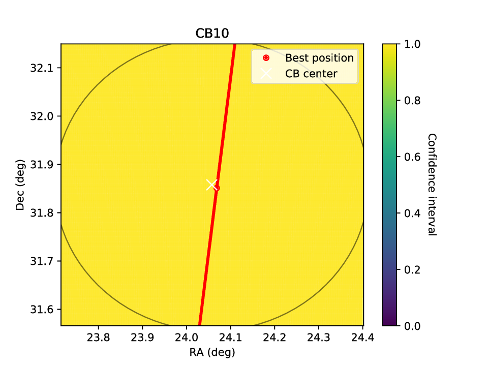
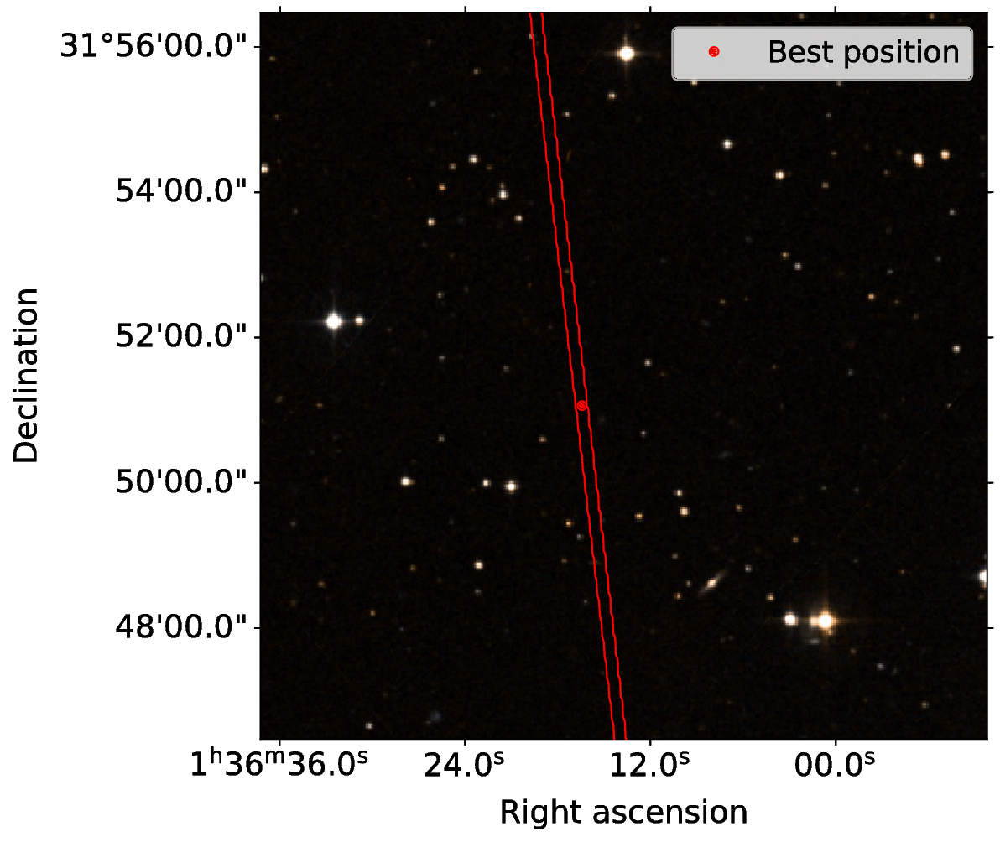

Localisation¶
Finally, we can run the actual localisation:
arts_run_localisation --config FRB190709.yaml --output_folder localisation_lowres --save_plots --verbose
As before, we first run the localisation at low resolution. Then we want to zoom in on the localisation region and increase the resolution.
Let’s see the output of the localisation script:
(py36) leon@zeus:FRB190709$ ls localisation_lowres/
FRB190709_burst00_CB00_chi2.npy FRB190709_burst00_total_conf_int.npy
FRB190709_burst00_CB00_conf_int.npy FRB190709_coord.npy
FRB190709_burst00_CB00.pdf FRB190709_localisation.npy
FRB190709_burst00_CB00_snr_too_high.npy
The localisation area looks like this:
{kind=link}
The source is really only localised in one direction, as it was detected in only one CB. The gaps in the contour indicate the resolution is too low. There is no clear preferred region to zoom in to, but we can try running the entire field at higher resolution. This is the same region at 2 arcsecond resolution, which required about 25 GB of memory and took 4 minutes:
Some details about the final localisation region, as printed by the script:
INFO:arts_localisation.run_localisation:Localisation area is 17764.00 arcsec2 = 4.93 arcmin2
INFO:arts_localisation.run_localisation:Best position: 01h36m16.4332s +31d51m03.8673s
Again, we can create a nice picture with HiPS. In this case the picture is zoomed in so we can see the size of the minor axis of the localisation ellipse; the major axis is much larger than the image.
{kind=link}